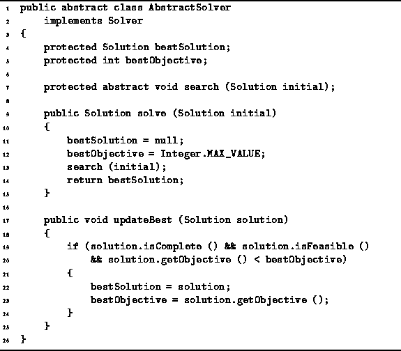

Data Structures and Algorithms
with Object-Oriented Design Patterns in Java
Data Structures and Algorithms
with Object-Oriented Design Patterns in Java
Program  defines the AbstractSolver class.
The AbstractSolver class implements the Solver interface
defined in Program .
The AbstractSolver class contains two fields,
bestSolution and bestObjective,
two concrete methods,
updateBest and solve
and the abstract method search.
Since search is an abstract method,
its implementation must be given in a derived class.
defines the AbstractSolver class.
The AbstractSolver class implements the Solver interface
defined in Program .
The AbstractSolver class contains two fields,
bestSolution and bestObjective,
two concrete methods,
updateBest and solve
and the abstract method search.
Since search is an abstract method,
its implementation must be given in a derived class.

Program: AbstractSolver class.
The solve method does not search the solution space itself--it merely sets things up for the search method. It is the search method, which is provided by a derived class, that does the actual searching. When search returns it is expected that the bestSolution field will refer to the best solution and that bestObjective will be the value of the objective function for the best solution.
The updateBest method is meant to be called by the search method as it explores the solution space. As each complete solution is encountered, the updateBest method is called to keep track of the solution which minimizes the objective function.
 Copyright © 1998 by Bruno R. Preiss, P.Eng. All rights reserved.
Copyright © 1998 by Bruno R. Preiss, P.Eng. All rights reserved.